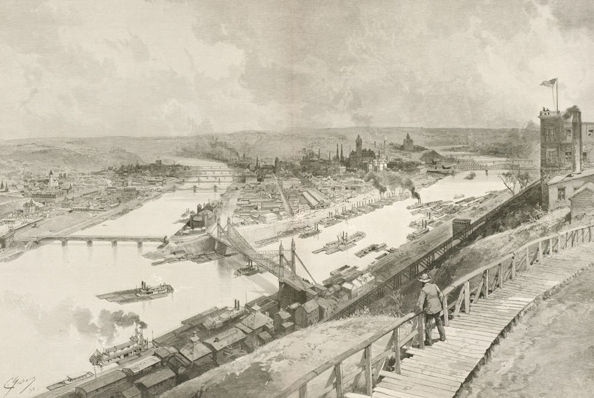

Pittsburgh Pollution
-
The Smoky City
Pittsburgh 1892 view from Grandview Avenue
Home for Industries
For over a century, Pittsburgh was known as the “Smoky City” or “Hell With the Lid Off" due to its smokey, grim atmosphere. Its geographic location and natural resources made it an ideal home for the industries that ultimately created the pollution problem. The city's past conditions act as a cautionary tale for cities lacking environmental control. Pittsburgh has an extremely long and complicated history with air pollution and the struggle to alleviate it.
Coal Mining
In 1762, a coal mining seam was discovered by the south bank of the Monongahela River. This was the beginning of a long relationship with industry. Smoke pollution was the most noticeable effect of coal consumption and gave the city its identity as the “City of Smoke.”
-
Prosperous Times
Pittsburgh 1849 industrial port
Initial Consequences
Between 1872 and 1908 the city had the highest typhoid fever mortality rate of any city in the nation. In Pittsburgh, an individual was three times more likely to die of typhoid fever. Sewage discharge into the rivers was one of the contributing factors to the problem. This was also where The city drew its water supply making the sewage discharge into it all the more hazardous.
Low Enforcement
There were efforts made in the 1800s to reduce air pollution, but they were hardly ever enforced. Then, smoke control ordinances and the Bureau of Smoke Control were introduced. However, they were also not very successfully due to lack of proper regulations, enforcement, and control technologies. It was difficult to convince residents that the smoke was a problem. People at the time felt the smoke was a sign of productivity and prosperity. They believed the smoke was good for their lungs and helped crops grow.
-
Environmental & Health Effects
Pittsburgh vegetation covered by air pollution
City Life
It was easy to see that smoke had many devastating effects on the city and the way people lived. Some of the most famous visual consequences were the conditions downtown at midday when street lights had to be turned on. The vegetation around the city was also affected; in contrast to the very green city of today, before smoke-control many of the hills were completely denuded by the fumes. Pittsburgh had acid rain before they even invented the term.
Profit over Health
“The Pittsburgher insists that the smoke of bituminous coal kills malaria and saves the eyesight. The smoke, so far from being an evil, is a blessing, and it destroys every property of the atmosphere that is hostile to life.” A report of the Mellon Institute—a six-volume study done between 1910 and 1914—focused on the economic costs of smoke; researchers had to downplay its health costs because they could not determine any of air pollution's relationships to various diseases. They concluded that although Pittsburghers had mottled lungs, this was not dangerous to their health because of what they called “pulmonary anthacosis,” or formation of lesions that allegedly warded off bacteria and promoted healing in the case of tuberculosis. This was an obvious cover-up to keep industry booming.
-
Deadly Smog

The Donora Smog lasted for four days until rain cleared the pollution
A Small Town Killer
The 1948 Donora smog was the worst air pollution disaster in U.S. history. It jumpstarted the fields of environmental and public health, drew attention to the need for industrial regulation, and launched a national conversation about the effects of pollution. It was a continuing factor in the fight between industry and the health of humans and their environment.
Yellow fog swept over the Pittsburgh neighborhood on Saturday October 20, around 2a.m. Within days, 20 people from Donora and Webster were dead. The funeral homes ran out of caskets; florists ran out of flowers. Hundreds flooded the hospitals, gasping for air, while hundreds more with respiratory or cardiac conditions were advised to evacuate the city. Their only saving grace was the rain that arrived at midday on Sunday, dispersing the fog.
-
Awareness

Pittsburgh 1892 view from Grandview Avenue
Changes in Policy
Following the deadly smog, President Truman held the first national air pollution conference in 1950. Influenced by a similar policy introduced in St. Louis, the city of Pittsburgh passed a law designed to reduce coal production in pursuit of cleaner air. Not willing to hurt such an important part of the Pittsburgh economy, it promised to clean the air by using treated local coal.
From Coal to Natural Gas
At the same time as the smoke-control act was being implemented, clean and inexpensive natural gas was flowing into the Pittsburgh area, replacing coal as a heating source. Between 1945 and 1950, more than half of Pittsburgh's households switched from coal to natural gas.
-
The Power of Activism

Evening rush hour on the Parkway East, Pittsburgh, 1973
GASP
In 1969, the Group Against Smog and Pollution (GASP) formed at a time when the environment was becoming a mainstream concern in many of America’s cities. “We represent the little man—we want (to help) anybody with lungs, ” GASP’s first president, Michelle Madoff, said in a 1970 interview. “I don’t know where you can buy new lungs.”
Much of the pressure on local industry for air-pollution reduction— for instance, in pushing for enforcement of the laws was applied by GASP. Today, GASP worksto explain and combat air quality problems through public meetings, engagement with the press, educational events, and permit reviews.
-
Pittsburgh Today

Pittsburgh's Skyline in 2018
Looking Ahead
Despite improvements to air quality in recent years, the Pittsburgh region still has some of the worst air pollution in the country, according to the American Lung Association’s latest “State of the Air” report. Pittsburgh’s air showed improvement, but it still got an F in ozone and particulate matter and ranked 9th worst in the country for long-term particle pollution, which is associated with heart and lung disease. Most of today's pollution comes from cars, power plants upwing of Pittsburgh, and lingering heavy industry like US Steel's Clairton Coke Works in Mon Valley. But what can we do about it?
1. First, we need to listen to and amplify the voices of people who are regularly subjected to ongoing pollution events—putting regional leaders on notice that they must do more to improve our air quality.
2. We need officials at the federal level to set more health-protective standards. Reducing emissions of fine particle pollution could save thousands of lives and reduce the pollution burden on our most vulnerable friends and neighbors.
3. We must make common-sense changes to ensure the local rules protecting public health from corporate polluters are as strong as possible.
What will YOUR future look like?